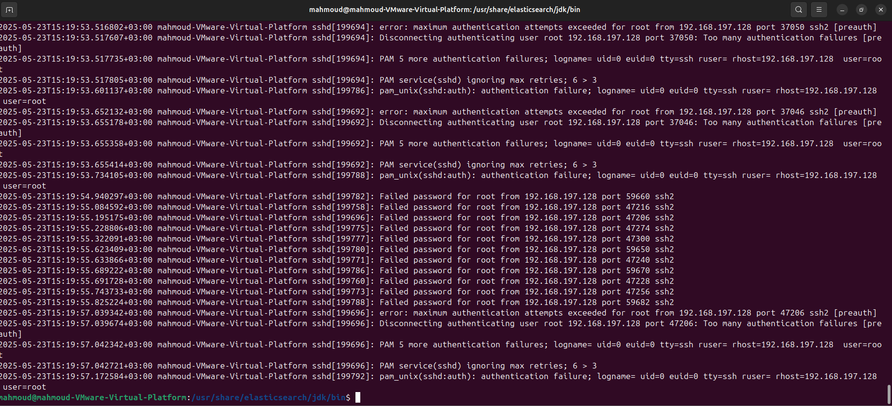
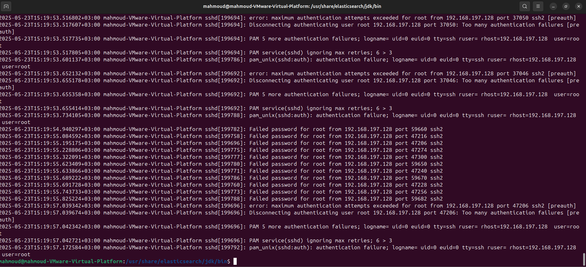
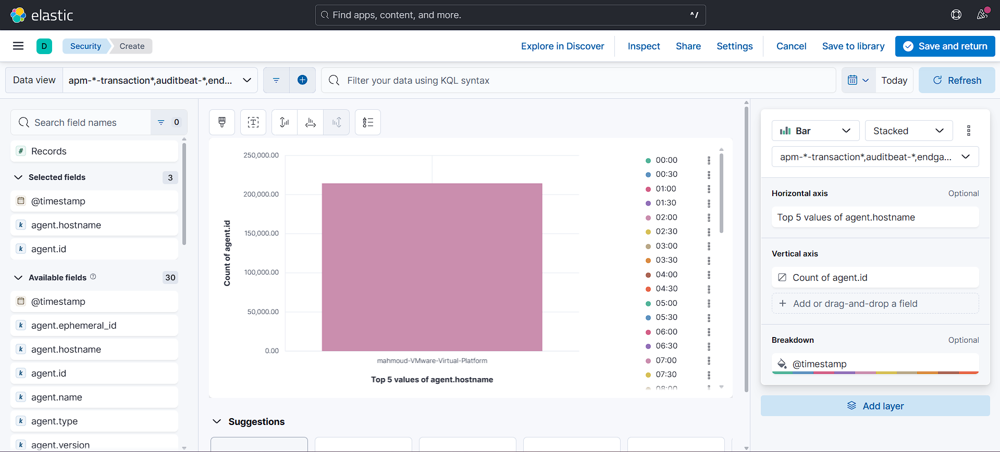
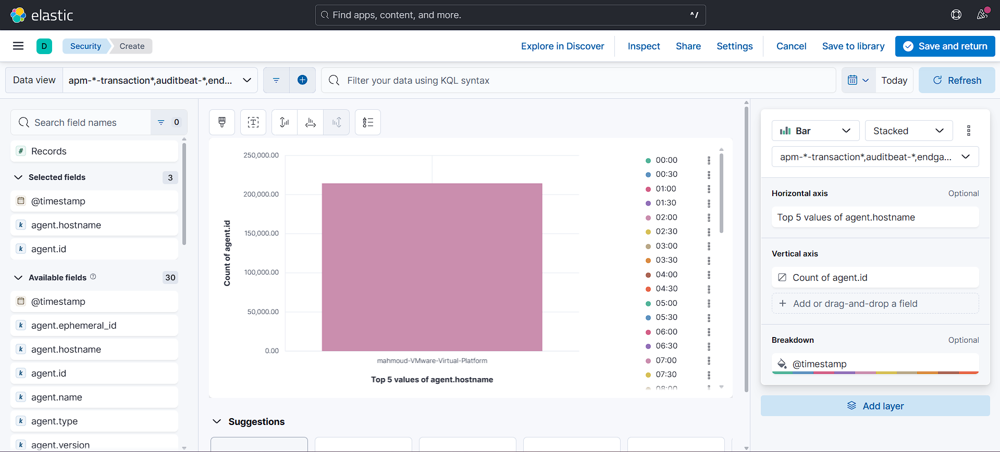

üîç Cybersecurity Projects
üíª TryHackMe ‚Äì Labs, Rooms, Challenges
Completed- Completed structured learning paths covering core cybersecurity concepts
- Earned certificates of completion
üêç Python SSH_Analyzer
Security ToolA Python-based script that parses SSH logs to detect:
- Brute-force attacks
- Suspicious logins
- Unauthorized access attempts
Integrated with Splunk SIEM for enhanced monitoring and detection capabilities.
Project Screenshots


Code Snippets


üõ°Ô∏è Home SOC Lab Project
Threat Detection & Analysis SimulationIntroduction
This project simulates a Security Operations Center (SOC) environment in a home lab setting, created to develop and demonstrate key skills required for a SOC Analyst Level 1 position.
Objectives
- Build a virtual SOC environment using VMware with Kali Linux and Ubuntu
- Install and configure a SIEM tool
- Simulate cyber attacks
- Detect and analyze suspicious activities
- Document incidents and map them to the MITRE ATT&CK framework
Tools & Technologies
VMware Workstation
Kali Linux
Ubuntu Server
Elastic SIEM
Lab Architecture
The lab was built using VMware Workstation with the following components:
- Kali Linux: Attacker machine for threat simulation
- Ubuntu Server: Configured with logging and monitored by the SIEM
- SIEM Tool: Collects, analyzes, and alerts on security logs
Lab Screenshots
 

 
